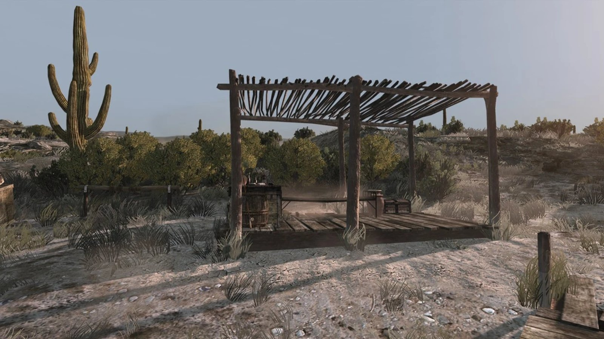
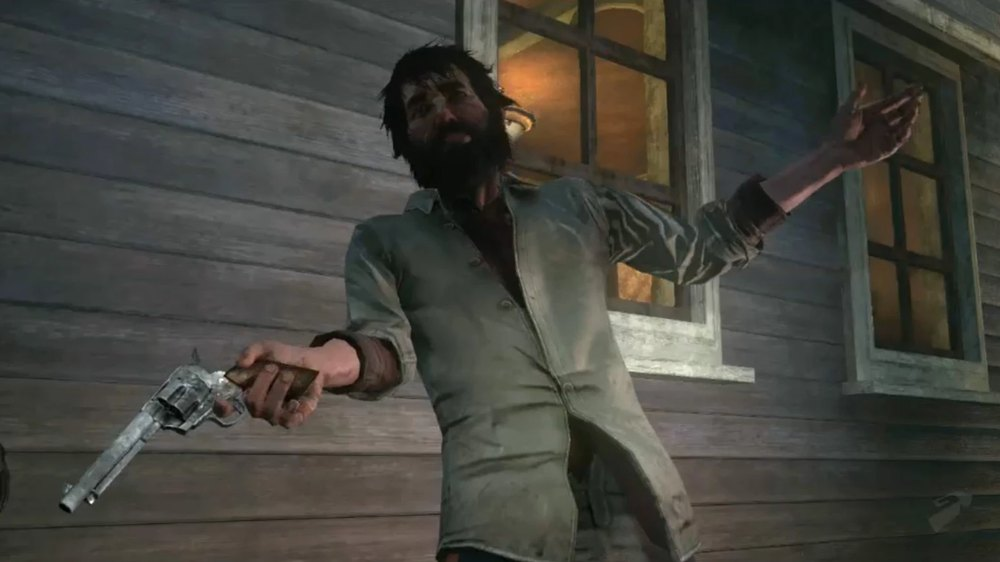
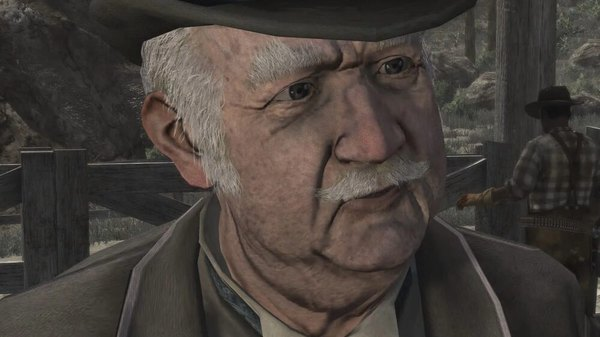
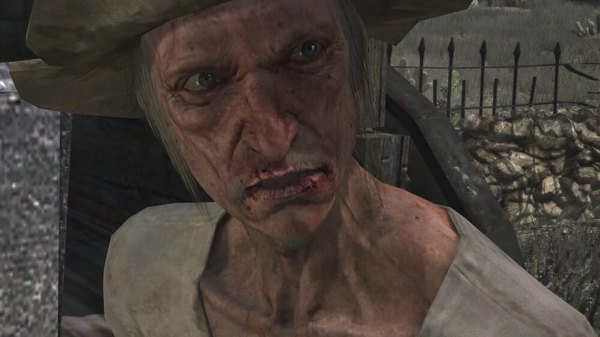
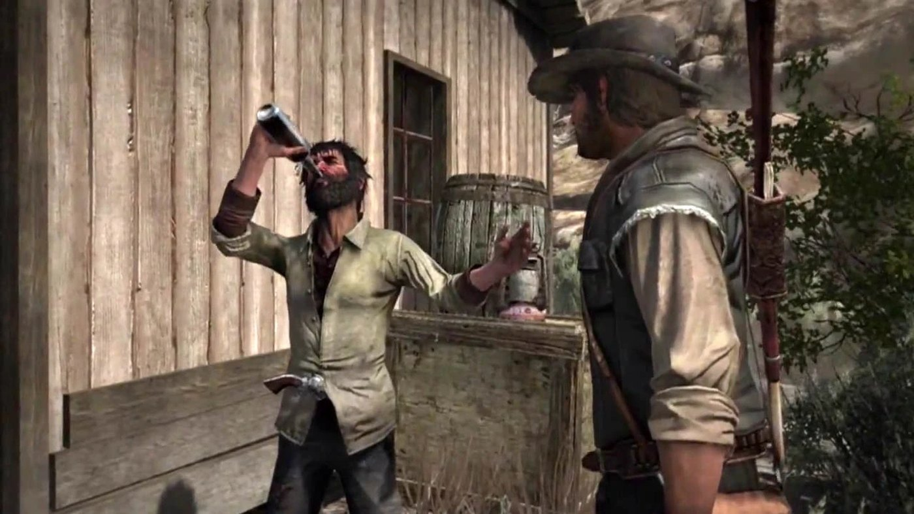

Character · New Austin
Irish
Irish is an Irish immigrant and gunrunner in Red Dead Redemption, and one of the three men John Marston recruits in New Austin to take Fort Mercer.
He is drunk in most of his appearances and claims contacts and abilities he does not have, but he is the one who produces the Gatling gun the assault depends on.
- Role
- Gunrunner
- Region
- New Austin, later Nuevo Paraiso
- Known for
- Supplying the Gatling gun for Fort Mercer
- Nationality
- Irish
- Games
- Red Dead Redemption
Biography
The Fort Mercer job
John needs firepower to get through the walls of Fort Mercer. Irish claims he can get a Gatling gun, and, after a detour that nearly gets both of them killed, he does. The weapon is hidden in Nigel West Dickens's stagecoach and fired from inside the fort once the gate opens.
Promises and excuses
Irish's dealings with John follow a pattern: a confident claim, a job that goes wrong, and an excuse. He takes John to contacts who turn out to be hostile, and to places that turn out to be ambushes. John keeps working with him because the alternative is doing it alone.
Across the border
Irish turns up again in Nuevo Paraiso, where he helps John cross the border and keeps trading in weapons. His drinking is worse, and his usefulness has not improved.
Relationships

John Marston
The man he supplies, misleads, and eventually comes through for.

Nigel West Dickens
Fellow recruit for Fort Mercer, whose stagecoach hides the Gatling gun.

Seth Briars
The third man in the Fort Mercer plan, who plays the corpse at the gate.
Behind the scenes
Irish appears in Red Dead Redemption (2010). He is known only by that nickname; no other name is given for him in the game.
Gallery
